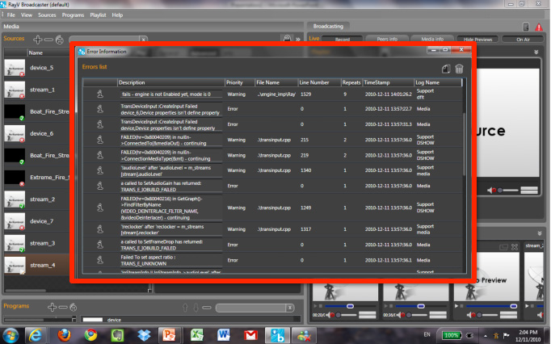

<? 
	$pagetitle = "RayV Broadcaster";
	$section = 'ecosystem';
?>
<?php include '../includes/header.php'; ?>

<?php include '../includes/rcol.php'; ?>
<div id="lcol">
	<div id="lcolinner">
		<h1>RayV HDX<sup>&trade;</sup> Encoder Series</h1>
		<h3 class="subh1">The Ultimate Combination of a Real Time HD Encoder and a Highly Sophisticated Virtual Broadcasting Control Room.</h3>
		<div class="bodycopy">
			<p class="firstp">The RayV HDX Encoders are designed to stream HDTV over IP to millions of concurrent viewers with unparalleled quality. The RayV HDX Encoder Series merges robust real time encoding with all the features needed to support complex new media broadcasting environments such as blackout management, in-stream interactive and local advertising,  time-shifting and real-time management of multiple streams. </p>
			<p class="firstp">Two products make up the RayV HDX Series:</p>
		</div>
		<div class="blueheader">
			<h2>RayV HDX 4500 Pro</h2>
			<h3 class="bluebg">The Heavy Duty, High Volume, High Definition Encoder</h3>
			<p class="firstp">Specifically designed for 24/7/365 broadcasting from telco grade video hub offices (VHO). The RayV HDX 4500 is capable of delivering four different qualities of streams in parallel for streaming to a wide range of devices and it can also provide layers for adaptive real time streaming. The RayV HDX can be deployed on standard servers such as the HP G6, significantly reducing capital expenditure.</p>
		</div>
		<div class="blueheader">
			<h2>RayV HDX 3500</h2>
			<h3 class="bluebg">The “Road Warrior” for Broadcasting Live from Anywhere, Anytime.</h3>
			<p class="firstp">A portable version of the HDX 4500 designed for live events and for broadcasting from low bandwidth environments. The HDX 3500 can be installed and operated from nearly any computer or laptop with a simple graphics card to input the video. Due to it’s extreme optimization methodology for bandwidth usage, HDX 3500 is the perfect solution for broadcasting from low bandwidth environments.</p>
		</div>
		<div id="productscroll">
			<h2>Screenshots</h2>
			<!-- root element for scrollable -->
			<div class="scrollable" id="productscrollable">   
				<!-- root element for the items -->
				<div class="items">
					<div class="scrollitem">
						<div class="scrollimg"></div>
 						<p><strong>RayV Broadcaster Master Control View</strong> – Split screen master control room view with quick access to Sources, Programs, Previews, Live Feed, and Network Information.</p>
					</div>
					<div class="scrollitem">
						<div class="scrollimg"></div>
						<p><strong>Sources</strong> –  Add any source such as files, streams, devices, time-shifted streams, images, etc., and control the attributes in real-time including: Aspect Ratio, Audio/Video Sync, Codec, Video Scale, and more.</p>
					</div>
					<div class="scrollitem">
						<div class="scrollimg"></div>
						<p><strong>Program and Playlists</strong> – Create on the fly playlists and programs from all available sources.  Combine live feeds and pre-recorded shows, insert ads, exchange blacked-out programs, add closed captions, and more.</p>
					</div>
					<div class="scrollitem">
						<div class="scrollimg"></div>
						<p><strong>Stream Settings</strong> – 4 qualities in real-time (300Kbps, 500Kbps, 1.2Mbps, 2.2Mbps).  Define profiles and codecs, set audio qualities, specify network configurations, and even record in real-time to make available on VoD.</p>
					</div>
					<div class="scrollitem">
						<div class="scrollimg"></div>
						<p><strong>Real-Time Streaming Information</strong> – Full network and media reports in real-time enabling up to the second network and stream quality management.</p>
					</div>
					<div class="scrollitem">
						<div class="scrollimg"></div>
						<p><strong>Error Information</strong> – View a real-time log of all Broadcaster activity (including real-time flags) allowing for immediate troubleshooting either locally or in remote mode.</p>
					</div>
				</div>
			</div>
			<!-- scroll navigation -->
			<div id="prodscrollnav">
				<div id="prodscrollnavinner">
					<a class="next browse right ir" onselectstart="return false;">&larr;</a>
					<div class="navi">
						<a href="#0" class="active"></a>
						<a href="#1" class=""></a>
						<a href="#2" class=""></a>
						<a href="#3" class=""></a>
						<a href="#4" class=""></a>
						<a href="#5" class=""></a>
					</div>
					<a class="prev browse left ir" onselectstart="return false;">&rarr;</a>
					<br clear="all">
				</div>
			</div>
		</div>
		<div class="tabwrapper">
			<ul class="tabs">
				<li><a href="#tab1">Encoding and Transcoding</a></li>
				<li><a href="#tab2">Master Control</a></li>
				<li><a href="#tab3">Additional Features</a></li>
				<!--<li><a href="#tab4">Side-by-side comparison</a></li>-->
			</ul>
			<div class="tab_container">
			    <div id="tab1" class="tab_content">
					<p><strong>Formats:</strong></p>
					<ul class="childlist">
						<li>The Broadcaster streaming format is the standard H.264 for video and AAC for audio. Equally supported via our gateway are Flash (H.264 or not) and WMV format.</li>
						<li>It supports most playable video files sources such as FLV, WMV, MOV, DVD, and AVI.</li>
						<li>For remote streams it accepts MMS, RTSP, and MPEGTS formats.</li>
					</ul>
					<p><strong>Real-Time Transcoding and Encoding</strong> – HDX transcodes and encodes in real time without the need to upload large video files to a central location. No need for any additional hardware beyond the PC and the capture cards for external feeds.</p>
					<p><strong>Capture Devices</strong> – HDX  intakes any capture device that supports DirectShow including TV tuners, USB or integrated cameras, tripods and mixing devices, and integrated or separated audio devices.</p>
					<p><strong>Compressed Mode</strong> – HDX includes a feature we call "Compressed Mode," which allows playing pre-encoded files without transcoding, resulting in low CPU consumption.</p>
					<p><strong>Supported Video Files</strong> – HDX  supports most video file formats and video/audio codecs. Files do not need to be decoded manually and they are automatically transcoded, in real-time, to the RayV broadcast format. File sources can be decoded with RayV decoders or using installed system codecs (DirectShow filters).</p>
					<p><strong>Remote Streams</strong> – HDX supports the intake of remote streams such as Live MMS steams with Windows Media codecs. In addition, any RayV stream can be used as a source for a channel, allowing real-time switching between channels, or time-shifting the content to local time zones.</p>
					<p><strong>Broadcasting Quality</strong> – The HDX includes both preset qualities as well as the ability to set your own quality manually .</p>
					<p><strong>Below are the proposed optimized streaming qualities for different screen sizes and devices. The automatic qualities include:</strong></p>
					<ul class="childlist">
						<li>Mobile Devices: 300kbps, 320*240 pixels, 32kbps audio</li>
						<li>Tablets/ PC on Low connections: 600kbps, 320*240 pixels, 64kbps audio</li>
						<li>PC and SD TVs (via connected devices from STBs to consoles): 1000kbps, 640*480 pixels, 64kbps audio</li>
						<li>PC/Consoles/HDTV’s: up to 3500 kbps, 1280*720 and 1080p</li>
					</ul>
			    </div>
			    <div id="tab2" class="tab_content">
					<p><strong>Sources List</strong> – The Sources List contains all the sources that were configured and can be filtered according to source type and source name. You can add, remove, preview or edit sources. Specific icons for each source type will appear.</p>
					<p><strong>Source Pre-Processing Control</strong> – Fully control how a source is pre-processed before it is encoded and decide on attributes such as:</p>
					<ul class="childlist">
						<li><strong>Deinterlace:</strong> Convert interlaced sources to progressive scan (RayV's standard scan)</li>
						<li><strong>Video Scaling Quality:</strong> Use HDX scaling algorithm when scaling sources to the desired resolution. (Better algorithms consume more CPU power)</li>
						<li><strong>Aspect Ratio:</strong> Convert sources with non-square pixels to square pixels (RayV's standard format). When the source's aspect ratio is different from the channel aspect ratio, black borders are automatically added to preserve a unified user experience.</li>
					</ul>
					<p><strong>Playlists</strong> – HDX includes a simple drag and drop playlist creator from which multiple playlists can be added, edited and deleted. A playlist can contain sources from different types including cameras, files, remote sources etc. The user can modify duration of sources in a playlist and edit the playlist on the fly even while broadcasting live.</p>
					<p><strong>Preview Pane</strong> – The preview pane allows you to preview in parallel your live streams, remote streams, files or playlists. “Capture devices” and “remote stream source” will show the live video when in standby, while “file sources” will show an automatically generated poster frame. You can preview both in a standby or live mode.</p>
					<p><strong>Live Return</strong> – The currently live broadcast stream is displayed in the live return window along with timing information and audio levels. If no source is currently live, the last will be repeated. If a playlist is live, then the playlist items will be displayed with the current playing item highlighted. You can choose one of two modes of operations: "on-air" and broadcasting to viewers or "off-air" and operating HDX locally or live to tape.</p>
					<p><strong>Recording</strong> – The live broadcast stream can be recorded in multiple video formats. Those files can be used as a time shifted source for another channel or for playing pre-encoded files in a compressed mode.</p>
			    </div>
			    <div id="tab3" class="tab_content">
					<p><strong>Time Shifting</strong> – HDX includes a recording feature that allows you to record all of the content broadcasted  in real time. Time shifting a live channel is achieved by recording the channel, using that content as the source, and attributing a different time schedule while rebroadcasting it. There is no need to transcode as the original format is already saved in the RayV format. This is commonly used when broadcasting content to expats in different regions (for example European news at 8 PM EST)</p>
					<p><strong>Multiple channels</strong> – Multiple HDX instances can be operated from the same installation on the same machine, significantly reducing the resources needed to broadcast channels and support the operation.</p>
					<p><strong>Information and Support</strong> – Real time connection and upload bandwidth information are available and automatically sent by the application when requesting support. HDX also creates detailed log files containing normal operations and errors.</p>
					<p><strong>Operation without User Interface / Parallel mode</strong> – The HDX window can be closed at any time and the live broadcast will continue to work as programmed. You can use all of the application’s features in parallel to prepare for another channel/ live broadcast/ show.</p>
					<p><strong>Auto Reboot - HDX High Availability</strong> – HDX automatically checks video files before use to prevent crashes due to corrupted files. If a crash occurs the application will automatically restart the broadcast. If it crashes again it will suggest removing the suspect corrupted sources.</p>
				</div>
				<!--<div id="tab4" class="tab_content">
					<table>
						<tr>
							<th class="firstcol"></th>
							<th class="middlecol">RayV HDX 4500 Pro</th>
							<th class="lastcol">RayV HDX 3500</th>
						</tr>
						<tr>
							<td class="firstcol">Sweet spot</td>
							<td class="middlecol">Heavy Duty HD Broadcasting 24/7/365</td>
							<td class="lastcol">SD Channels, Low Bandwidth environments and Live events</td>
						</tr>
						<tr>
							<td class="firstcol">Hardware</td>
							<td class="middlecol"></td>
							<td class="lastcol"></td>
						</tr>
						<tr>
							<td class="firstcol">Streaming quality</td>
							<td class="middlecol"></td>
							<td class="lastcol"></td>
						</tr>
						<tr>
							<td class="firstcol">Encoding</td>
							<td class="middlecol"></td>
							<td class="lastcol"></td>
						</tr>
						<tr>
							<td class="firstcol">Ingestion</td>
							<td class="middlecol"></td>
							<td class="lastcol"></td>
						</tr>
					</table>
				</div>-->
			</div>
		</div>
	</div>
</div>
<?php include '../includes/footer.php'; ?>
